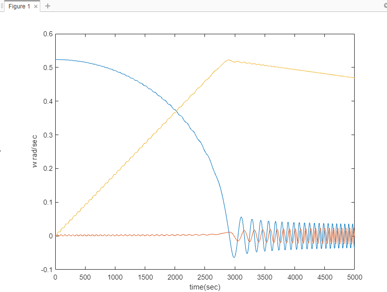
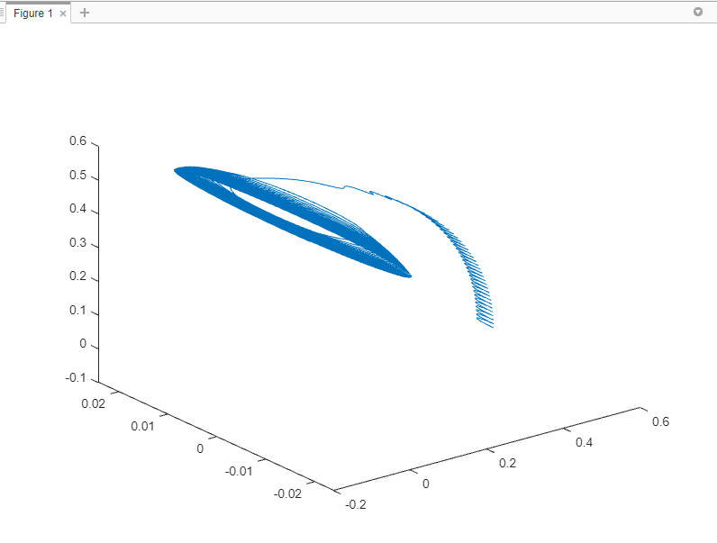
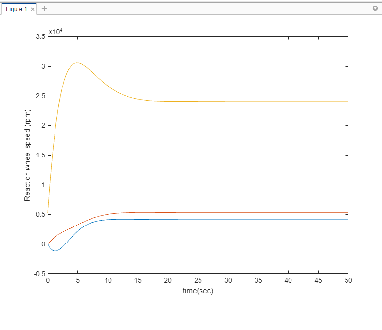

PROJECT
Attitude Control
Spacecraft Dynamics course project (University of Cincinnati, 2021)

alt="Angular velocities in function of time">Project Overview
Stabilized a tumbling satellite using reaction wheels: derived Euler's rotational equations for the satellite-plus-wheel system, simulated the tumbling motion in MATLAB, and determined attitude from simulated sensor data with the TRIAD and QUEST algorithms. Designed a nonlinear feedback control law, proven stable via a Lyapunov function, that drove the satellite to zero attitude and angular velocity within 50 seconds, then tuned the gains and checked reaction-wheel speeds for feasibility.

